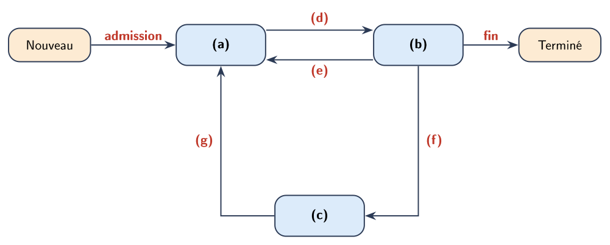

Gestion des processus et des ressources – Exercices⚓︎
Organisation
- Les exercices 1 à 6 suivent le format des sujets d'écrit des sessions 2023 à 2026. Les exercices marqués ⭐ sont des prolongements.
- Toute réponse doit être justifiée par une ou deux phrases rédigées, sauf mention contraire. À l'écrit du baccalauréat, la maîtrise de la langue (vocabulaire juste, raisonnement formulé) compte pour 2 points sur 20.
- Pour les chronogrammes, appliquer la méthode du cours : relire les règles, repérer les conventions, avancer cycle par cycle. Dans les énoncés, « instant » a le sens de « date » dans le cours : le cycle \(k\) s'étend de l'instant \(k\) à l'instant \(k+1\).
Questions flash (début de séance)⚓︎
D'après le sujet du bac NSI 2021. Une seule réponse exacte par question, sans justification.
- Quelle commande affiche les processus en cours d'exécution ? a.
dirb.psc.mand.ls - Quelle abréviation désigne l'identifiant d'un processus dans un système de type UNIX ? a. PIX b. SIG c. PID d. SID
- Comment s'appelle la gestion du partage du processeur entre différents processus ? a. l'interblocage b. l'ordonnancement c. la planification d. la priorisation
- Quelle commande permet d'interrompre un processus dans un système de type UNIX ? a.
stopb.interruptc.endd.kill
Exercice 1 – États d'un processus⚓︎
Inspiré de 26-NSIJ2AN1 (exercice 1, partie A) et 24-NSIJ1AN1 (exercice 1).
- Citer les trois états dans lesquels peut se trouver un processus.
-
Associer à chacune des lettres (a) à (g) du schéma ci-dessous l'un des termes : « élu », « prêt », « bloqué », « élection », « blocage », « déblocage », « préemption ».

-
Sur un ordinateur à un seul processeur, on observe à un instant donné trois processus :
- A effectue un calcul et utilise le processeur ;
- B a demandé la lecture d'un fichier sur le disque et attend que les données soient chargées ;
- C dispose de tout ce qu'il lui faut, mais le processeur est occupé.
Indiquer l'état de chacun des trois processus.
-
La lecture demandée par B se termine. Dans quel état passe B ? Peut-il utiliser immédiatement le processeur ? Justifier.
- On suppose dans cette question qu'aucun processus n'utilise de ressource autre que le processeur. Quels sont alors les seuls états possibles pour un processus ? Justifier.
Exercice 2 – Observer les processus⚓︎
Inspiré de 23-NSIJ2PO1 (exercice 3).
La commande ps -ef produit l'affichage suivant (extrait, colonnes simplifiées) :
1 2 3 4 5 6 7 8 9 10 11 | |
- Quel est le processus père du processus de PID 1533 ? Quel est son père à lui ?
- Représenter sous forme d'arbre les processus descendants du processus de PID 1201 (on indiquera les PID).
- Écrire une seule commande
killqui termine Firefox et tous ses processus fils, et uniquement eux. - La ligne
python3 calcul.pyapparaît deux fois. Proposer une explication en utilisant le vocabulaire du cours. - L'utilisatrice alice tape
kill 612. Que se passe-t-il ? Pourquoi ?
Exercice 3 – Ordonnancement par priorités⚓︎
Format des sujets de 2021 et de 23-NSIJ2NC1 (exercice 3).
Un processeur choisit, à chaque cycle, le processus à exécuter. Le numéro de priorité est d'autant plus petit que la priorité est grande. À chaque cycle, le processus prêt qui a le plus petit numéro est exécuté, ce qui peut provoquer la suspension d'un autre processus ; celui-ci reprendra lorsqu'il sera de nouveau le plus prioritaire. Un processus arrivé à l'instant \(t\) peut être exécuté dès le cycle \(t\).
| Processus | Instant d'arrivée | Durée (cycles) | Numéro de priorité |
|---|---|---|---|
| P1 | 0 | 4 | 2 |
| P2 | 1 | 2 | 1 |
| P3 | 2 | 3 | 3 |
| P4 | 5 | 2 | 0 |
-
Recopier et compléter le chronogramme en indiquant le processus exécuté à chaque cycle.
Cycle 0 1 2 3 4 5 6 7 8 9 10 Élu -
Calculer le temps de séjour (fin − arrivée) et le temps d'attente de chaque processus.
- Quel processus est le plus pénalisé ? Expliquer quel risque courrait ce processus si des processus de numéro de priorité 0 ou 1 arrivaient sans cesse. Nommer ce phénomène.
Exercice 4 – Appliquer un algorithme décrit dans l'énoncé⚓︎
Inspiré de 23-NSIJ2PO1 (exercice 3, question 2).
On considère l'algorithme d'ordonnancement suivant, qui n'a pas été étudié en cours :
- parmi les processus prêts, l'ordonnanceur choisit celui dont la durée restante est la plus courte ;
- le processeur exécute un cycle de ce processus, puis l'ordonnanceur choisit de nouveau ;
- en cas d'égalité, il choisit le processus arrivé le plus tôt ;
- un processus arrivé à l'instant \(t\) peut être choisi dès le cycle \(t\).
| Processus | Instant d'arrivée | Durée (cycles) |
|---|---|---|
| P1 | 0 | 6 |
| P2 | 1 | 3 |
| P3 | 2 | 1 |
| P4 | 4 | 2 |
- Cet algorithme est-il préemptif ? Justifier.
- Construire le chronogramme de 0 à la fin de l'exécution de tous les processus.
- Calculer la moyenne des temps de séjour des quatre processus.
- Construire le chronogramme du même jeu de processus avec l'algorithme FIFO, puis calculer la moyenne des temps de séjour. Quel algorithme est le plus performant selon ce critère ?
- Quel inconvénient l'algorithme de cet exercice présente-t-il pour un processus long comme P1 ?
Exercice 5 – Le tourniquet et sa programmation avec une file⚓︎
Inspiré de 26-NSIJ2AN1 (exercice 1, partie B) et 24-NSIJ1AN1 (exercice 1).
On utilise un ordonnanceur de type tourniquet, de quantum 2 cycles :
- le processus en tête de la file d'attente est défilé et s'exécute pendant au plus un quantum ;
- s'il a terminé avant ou à la fin du quantum, le processus suivant est défilé ;
- sinon, il est remis en queue de la file d'attente ;
- convention : un processus qui arrive à l'instant \(t\) est enfilé avant un processus remis en file au même instant.
| Processus | Instant d'arrivée | Durée (cycles) |
|---|---|---|
| P1 | 0 | 5 |
| P2 | 1 | 2 |
| P3 | 2 | 4 |
| P4 | 6 | 1 |
Partie A – à la main⚓︎
-
Recopier et compléter le chronogramme. On indiquera à chaque instant où un processus est défilé le contenu de la file d'attente.
Cycle 0 1 2 3 4 5 6 7 8 9 10 11 Élu -
Calculer le temps de séjour de chaque processus.
- À quels instants la convention d'arrivée intervient-elle ? Donner le chronogramme obtenu avec la convention inverse (le processus remis en file passe devant le processus qui arrive au même instant).
Partie B – en Python⚓︎
Chaque processus est représenté par un dictionnaire ; la clé 'reste' donne le nombre de cycles qu'il lui reste à exécuter. On dispose d'une classe File munie des méthodes est_vide(), enfiler(element) et defiler().
- Écrire les instructions qui créent une file
fcontenant les processus A (3 cycles), B (5 cycles) et C (2 cycles), dans cet ordre, A étant en tête. -
La fonction
execute_une_trancheréalise une étape du tourniquet : elle défile un processus, l'exécute pendant au plusquantumcycles à partir de l'instantt, le remet en queue de file s'il n'est pas terminé, et renvoie l'instant où l'étape se termine. Recopier et compléter son code.1 2 3 4 5 6 7 8 9 10
def execute_une_tranche(file, t, quantum): p = file.defiler() if p['reste'] ... quantum: p['reste'] = ... ... return t + ... else: fin = t + ... p['reste'] = 0 return fin -
On suppose que tous les processus sont déjà dans la file à l'instant 0. Écrire une fonction
execute_tous(file, quantum)qui exécute tous les processus avec le tourniquet et renvoie l'instant où se termine le dernier. - Que renvoie
execute_tous(f, 2)avec la filefcréée au début de cette partie ? Pouvait-on prévoir ce résultat sans dérouler l'algorithme ? Justifier.
Exercice 6 – Interblocage⚓︎
Format de 24-NSIJ1AN1 (question 7) et 26-NSIJ2AN1 (question 4).
Trois ressources A, B et C ne peuvent être utilisées que par un seul processus à la fois. Trois processus s'exécutent de manière concurrente ; chacun demande et libère les ressources dans l'ordre indiqué (de haut en bas). Un processus qui demande une ressource déjà détenue passe à l'état bloqué jusqu'à ce qu'elle soit libérée.
| P1 | P2 | P3 |
|---|---|---|
| demander A | demander B | demander C |
| demander B | demander C | demander A |
| libérer B | libérer C | libérer A |
| libérer A | libérer B | libérer C |
- Expliquer, de façon générale, dans quelle situation un interblocage peut survenir.
- Proposer un ordre d'exécution des instructions qui conduit à un interblocage. Justifier en indiquant, à la fin, quelle ressource chaque processus détient et laquelle il attend.
- Représenter cette situation par un schéma d'allocation des ressources et montrer qu'il contient une attente circulaire.
- Modifier l'ordre des demandes d'un seul processus pour que l'interblocage devienne impossible. Justifier.
⭐ Exercice 7 – Accès concurrent à une donnée partagée⚓︎
Inspiré de 23-NSIJ2NC1 (exercice 3). Prolongement : les notions de cet exercice dépassent le programme.
Deux guichets vendent des billets pour un même concert. Une variable partagée places contient le nombre de places restantes, initialement 10. Pour vendre un billet, chacun des deux processus G1 et G2 exécute :
1 2 3 | |
L'ordonnanceur peut interrompre un processus entre deux de ces instructions.
- On exécute G1 en entier, puis G2 en entier. Quelle est la valeur finale de
places? - Proposer un entrelacement des instructions de G1 et G2 pour lequel la valeur finale est 9. Expliquer pourquoi ce résultat est faux.
- On protège les trois instructions par un verrou : un processus doit acquérir le verrou avant la lecture et le libérer après l'écriture ; un processus qui demande un verrou déjà pris est bloqué. Expliquer pourquoi le résultat est alors toujours correct.
- Faire le lien avec la notion de ressource en exclusion mutuelle du cours.